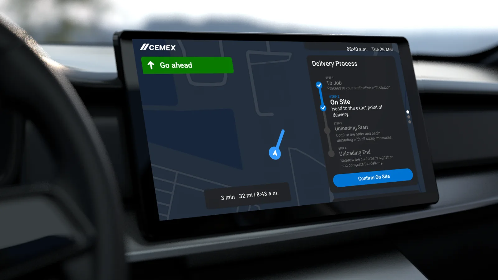
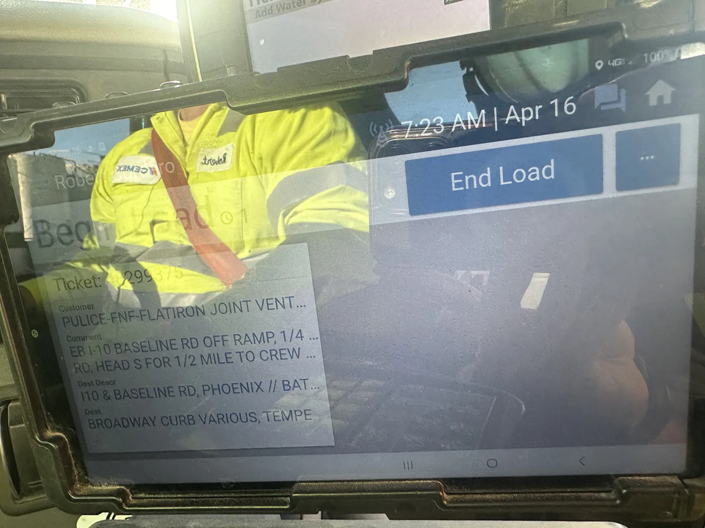
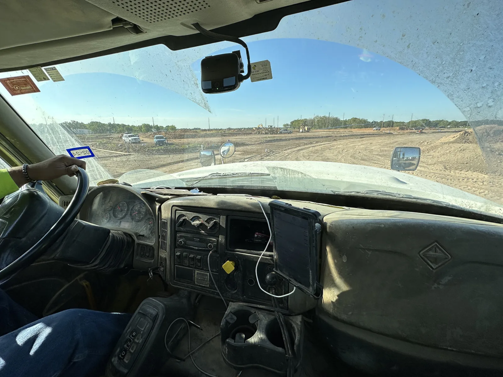
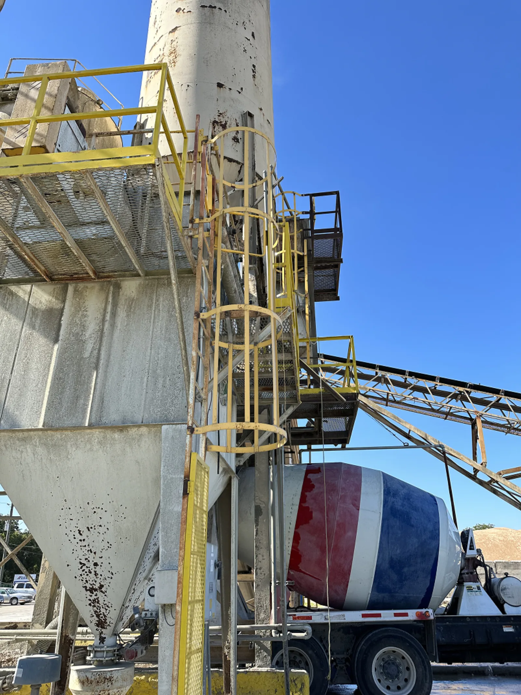
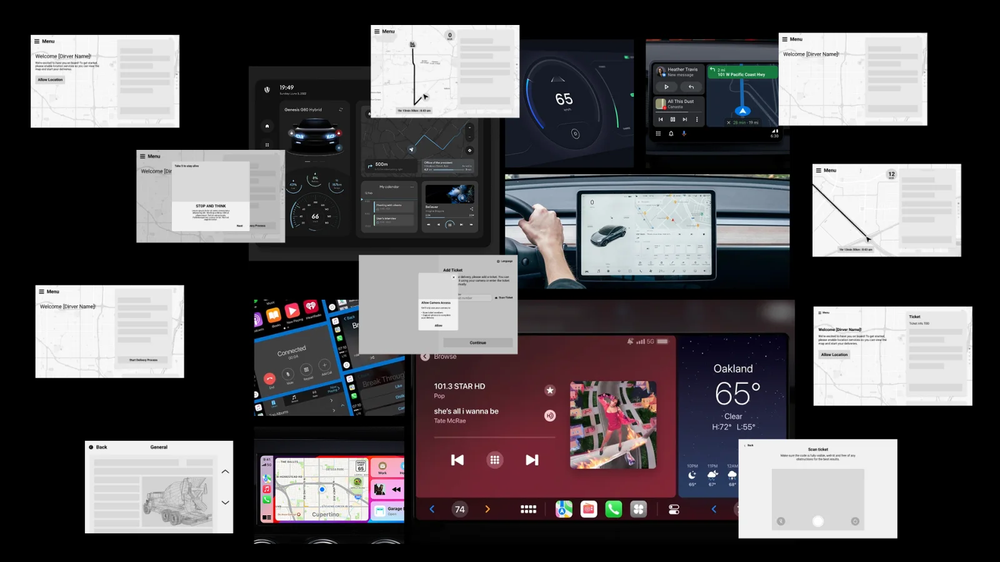
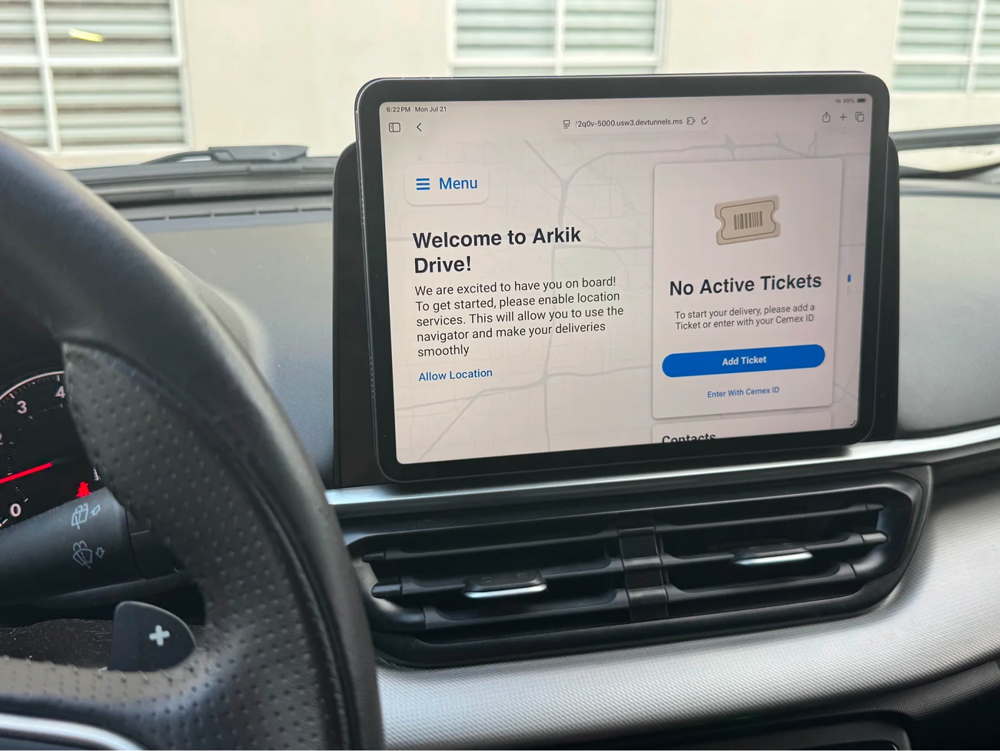
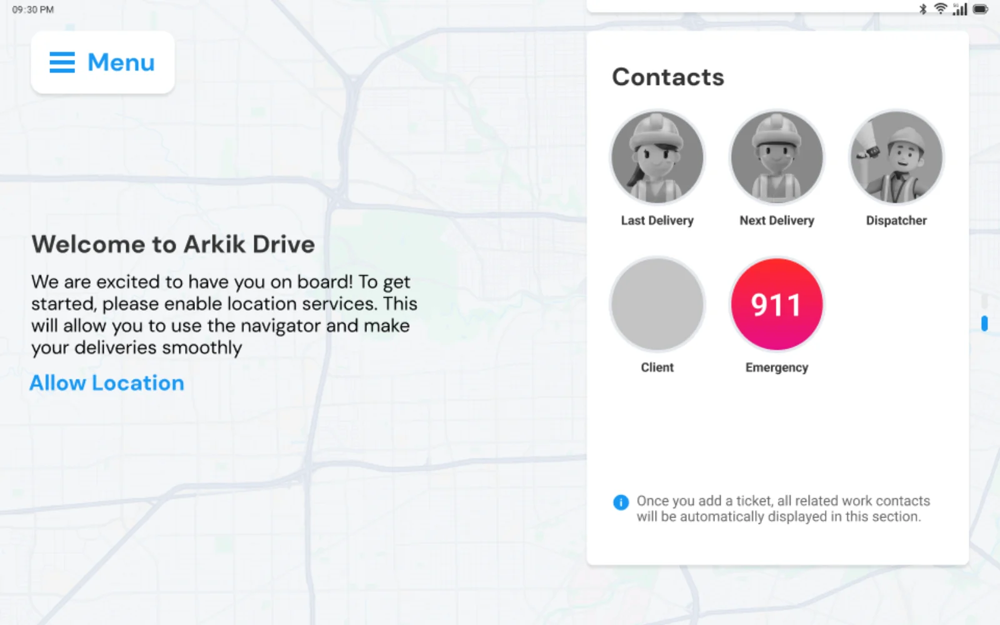
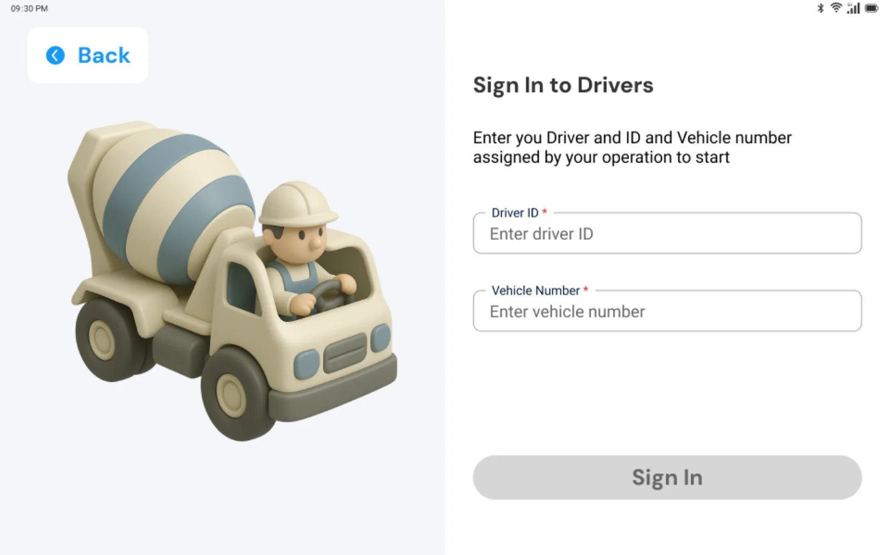
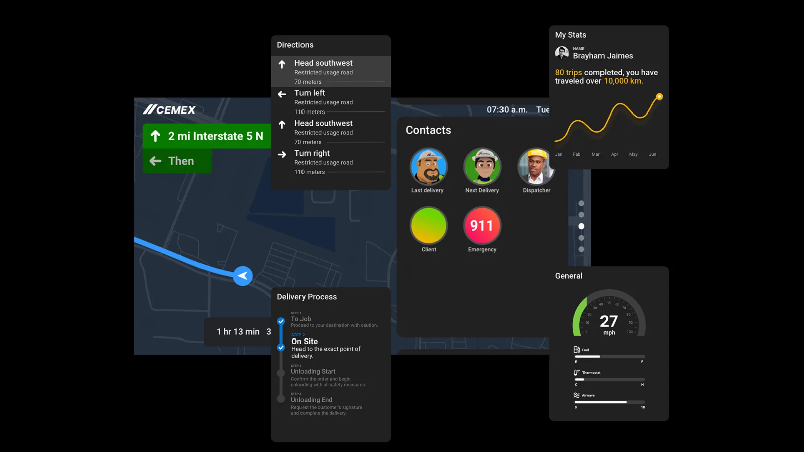

CEMEX Driver App
Redesigning logistics delivery for 100+ drivers across two countries
Drivers were using 2 outdated apps, with no map, switching screens while driving: a real safety risk.
I spotted the opportunity outside my role (I was on Ready Mix), designed a map-first Car-UI concept, and pitched it as a business case.
Leadership approved it and created a dedicated development team; the project went from an internal tool to a scalable product for the United States and the United Kingdom.

The project
CEMEX drivers were managing deliveries using two separate mobile apps with outdated interfaces and severe usability issues. Switching between apps while driving was a real safety risk.
The system had no map — a delivery app with no map — signatures sometimes failed because the app stopped responding, and the whole experience felt disconnected from how drivers actually work inside a truck. The company was also migrating to paperless operations, which made a reliable driver tool critical for the business.
My role
I joined as the sole product designer at CEMEX, where my primary responsibility was the Ready Mix app: a mobile platform for clients to track orders and place new ones. I worked closely with the product managers, solving problems from a design perspective and contributing to product decisions throughout my time on the project.
But while working on Ready Mix, I identified a much bigger opportunity. The drivers delivering those orders were stuck using two outdated mobile apps inside their trucks, and nobody was designing for them. I spent extra time building a concept for a completely new approach based on Car UI principles and presented it to my lead, who took it to CEMEX's leadership. They approved it and created a dedicated development team to build it. That concept became the Driver App, and it's the case I'm presenting here.
I owned the full design scope on both products: research, flows, UI and design decisions.
I flew to Houston and rode along with drivers to see how they actually worked. I watched them use the apps in their trucks, switch between screens while driving, and deal with broken flows during deliveries.



What I found confirmed my hypotheses and uncovered new problems:
Multiple apps in use
Drivers switched between navigation, delivery and communication apps constantly, increasing cognitive load and taking their eyes off the road.
High distraction risk
Frequent app switching and small touch targets pulled attention away from driving. The interfaces were not designed for in-vehicle use.
Confusing workflows
Information was fragmented across tools. Understanding task status at a glance was nearly impossible.
Outdated solutions
Legacy interfaces with poor usability and low adoption. The apps didn't match the devices drivers were actually using.
Three design decisions shaped the entire product:
Driver safety above everything else
Every interaction had to be possible with minimal attention away from the road. This became the filter for every design decision: if it required focus that could cause an accident, it didn't make it into the interface.
Dynamic card system: show only what matters right now
Instead of loading the screen with every piece of operational data, I designed a system of contextual information cards that surface the most relevant content based on the driver's current task and delivery stage. At "To Job" you see the map and ETA. At "On Site" you see the order and unloading steps. The interface adapts, the driver doesn't have to search.
Light and dark mode for real-world conditions
Truck cabins deal with direct sunlight, reflections on mounted tablets, and nighttime driving. Light and dark mode weren't a visual preference; they were a safety requirement to maintain legibility across conditions.
The Car UI decision
The existing apps were standard mobile interfaces forced onto a tablet mounted in a truck. I studied how automotive interfaces handle the same constraints: limited attention, glanceable information, large touch targets, minimal interaction depth. I applied those principles to redesign the entire experience as a map-first, single-app solution.

Map-first navigation
The core experience centers on the map. Route, ETA and delivery status are visible at all times without switching screens. The previous system had no map at all.

Guided process, contextual cards and driver stats
The delivery lifecycle (To Job → On Site → Unloading Start → Unloading End) is presented as a clear step-by-step process with large, glanceable status indicators. Each step surfaces only the actions and information relevant to that moment.
Instead of deep navigation menus, cards appear based on context: directions when driving, order details when on site, signature capture when completing delivery. The driver never has to search for what they need.
A dedicated section brings together trip history, distance traveled, speedometer and vehicle diagnostics — operational data that was previously scattered across systems, now in one place.


Contacts and emergency access
One-tap access to dispatch, the client, the next delivery contact and emergency services (911). Communication without leaving the app or losing context.

A concept nobody asked me for ended up creating a team. CEMEX leadership approved the vision and assigned a dedicated development team to build it. The project evolved from an internally focused tool into a scalable external solution, designed to support a broader ecosystem of drivers across the United States and the United Kingdom.
This project taught me that the best design work sometimes starts outside your job description. The concept that got approved wasn't something anyone asked me to do. I saw the opportunity, invested the extra time to build it properly, and presented it with a clear business case. That initiative created a new team and a new product.
It also reinforced something I now consider a principle: you can't design for someone you haven't watched work. The field visit to Houston changed my understanding of the problem more than any amount of desk research would have. Watching a driver try to tap a small button on a bouncing tablet while turning a cement truck is the kind of insight that doesn't fit in a persona document.
This project is under NDA. Visual details have been adapted to protect confidential information while accurately representing the design approach and decisions.